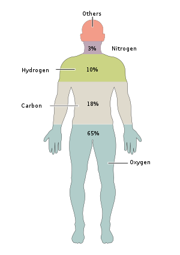

9 Future Failures: Disruption of C-Cycle and N-Cycle
About 99% of the mass of the human body is made up of six elements: oxygen, carbon, hydrogen, nitrogen, calcium, and phosphorus.

9.1 Carbon (\(C\))
Carbon: the building block of life. All living things are made of elements, the most abundant of which are, oxygen, carbon, hydrogen, nitrogen, calcium, and phosphorous. Carbon is also present in the Earth’s atmosphere, soils, oceans, and crust.
9.1.1 Carbon cycle
Global C cycling involves the exchange of C between its four main reservoirs—the Earth’s atmosphere, soils, oceans, and crust.
Carbon helps to regulate the Earth’s temperature, makes all life possible, is a key ingredient in the food that sustains us, and provides a major source of the energy to fuel our global economy. Humans play a major role in the carbon cycle through activities such as the burning of fossil fuels or land development.
Over the past centuries, fossil fuels have played an essential role in the unprecedented development of the human civilization, but rapid fossil fuels combustion since the industrial revolution results in over 35 gigatonnes CO2 emission annually, which gradually disrupts the balance of the natural carbon cycle and causes serve climate issues including but not limited to the climate change, rising sea-levels, and decreasing food security.
9.1.2 Blue carbon:
Blue carbon is the term for carbon captured by the world’s ocean and coastal ecosystems. Sea grasses, mangroves, salt marshes, and other systems along our coast are very efficient in storing \(CO_2\). These areas also absorb and store carbon at a much faster rate than other areas, such as forests, and can continue to do so for millions of years.
9.1.3 Effects of Changing the Carbon Cycle
All of this extra carbon needs to go somewhere. So far, land plants and the ocean have taken up about 55 percent of the extra carbon people have put into the atmosphere while about 45 percent has stayed in the atmosphere. Eventually, the land and oceans will take up most of the extra carbon dioxide, but as much as 20 percent may remain in the atmosphere for many thousands of years.
The changes in the carbon cycle impact each reservoir. Excess carbon in the atmosphere warms the planet. Excess carbon in the ocean makes the water more acidic, putting marine life in danger.
Humans play a major role in the carbon cycle through activities such as the burning of fossil fuels or land development. As a result, the amount of carbon dioxide in the atmosphere is rapidly rising; it is already considerably greater than at any time in the last 3.6 million years.
9.1.4 Greenhouse gas (GHG) emissions
GHG emissions accounting is an important factor in the design and implementation of climate mitigation policy. As the world’s largest exporter of embodied emissions, in 2009, China had over one-fifth of its export-related emissions flow to the EU and the US, respectively: the two largest importers of embodied emissions in the world.
9.2 Nitrogen (\(N\))
Nitrogen is everywhere! In fact, \(N_2\) gas makes up about 78% of Earth’s atmosphere by volume. Nitrogen is a key component of the bodies of living organisms. Nitrogen doesn’t remain forever in the bodies of living organisms. Instead, it’s converted from organic nitrogen back into \(N_2\) gas by bacteria.
Having nitrogen around and being able to make use of it are two different things. We humans may not be able to fix nitrogen biologically, but we certainly do industrially! About 450 million metric tons of fixed nitrogen are made each year using a chemical method called the Haber-Bosch process, in which \(N_2\) is reacted with hydrogen (\(H_2\)) at high temperatures. Most of this fixed nitrogen goes to make fertilizers we use on our lawns, gardens, and agricultural fields.
In general, human activity releases nitrogen into the environment by two main means: combustion of fossil fuels and use of nitrogen-containing fertilizers in agriculture. Both processes increase levels of nitrogen-containing compounds in the atmosphere.
9.2.1 Nitrogen cycle
The nitrogen cycle refers to the movement of nitrogen within and between the atmosphere, biosphere, hydrosphere and geosphere. The nitrogen cycle matters because nitrogen is an essential nutrient for sustaining life on Earth.

- The production and use of fertilizers for agricultural activities that increase the amount of nutrients in soil or water, especially nitrogen. These nutrients increase plant and algae growth. However, increased nutrient is not always a good thing.
Burning of fossil fuels releases nitrous oxide (\(N_2O\)), a greenhouse gas, into the atmosphere. The burning of fossil fuels also releases nitrogen oxides (\(NO_x\)), sulfur dioxide (\(SO_2\)), and carbon dioxide (\(CO_2\)) that react with water vapor, oxygen, and other chemicals to form acid rain.
Increased precipitation can increase erosion and thus increase the transport of nitrogen (and other chemical nutrients) into soils, freshwater environments, and coastal waters.
Deforestation, habitat loss, and erosion can reduce the nutrient levels in soils.
9.2.2 The Haber-Bosch Process
The Haber–Bosch process, is the main industrial procedure for the production of ammonia. The German chemists Fritz Haber and Carl Bosch developed it in the first decade of the 20th century. The process converts atmospheric nitrogen (N2) to ammonia (NH3) by a reaction with hydrogen (H2). Before the development of the Haber process, it had been difficult to produce ammonia on an industrial scale.
Uses for Ammonia:
- 88% of ammonia is used to make fertilizers
- Ammonia is oxidized to \(NO_2\) and \(NO_3\) for use in explosives
References:
- Chen, ZM., Ohshita, S., Lenzen, M. et al. Consumption-based greenhouse gas emissions accounting with capital stock change highlights dynamics of fast-developing countries. Nature Communication 9, 3581 (2018).